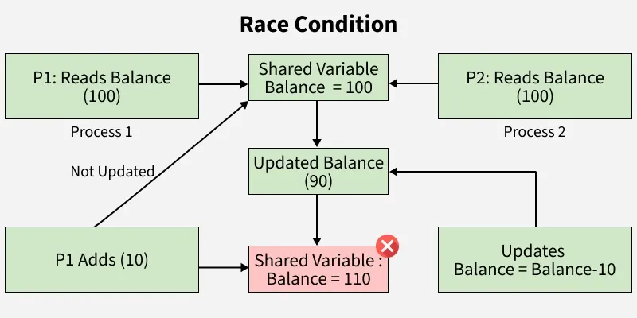

Race Condition: When two or more processes/threads access a shared resource and the outcome is non-deterministic (not always the same).
This can lead to incorrect and/or unpredicatable results.
| Shared Resource | Anything (variable, file, memory location, etc.) accessed by multiple processes. Protecting these is important in avoiding race conditions. |
| Concurrency | When multiple processes/threads execute simultaneously |
| Non-Atomic Operations | Operations that can be interrupted. Like how an atom can't be further divided, atomic operations are ones that can't be interrupated. Non-atomic operations are the opposite. |
